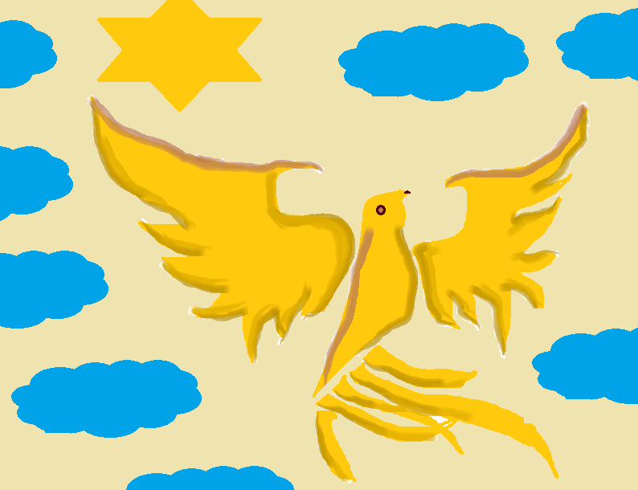

Jackalope

In North American folklore, a jackalope is a jackrabbit with the horns of an antelope.
One has never been sighted. We are pleased to confirm its existence on Epsilon Island.
It behaves and has a diet similar to a North American jackrabbit. The horns are used as a weapon
when males are courting or territorial.
Wild Boar Oxen

These creatures, although seeming to look intimidating, are very gentle and tend to stay out of another creatures’ way.
Found in the forested areas, the Wild Boar Oxen tend to remain within their herds and can often be seen running through the fields of grass with their companions.
They are monogamous and tend to have two to three babies in their lifetime. They eat grass and other plants and do not eat meat.
These animals do not hibernate but instead develop a thicker coat of fur and continue to thrive.
Most of their reproduction is also done around the Fall time, when it begins to get colder.
These creatures span up to 80 years, with some oxen even living up to 100 years. They have no known predators,
other than hunters..
Golden Egg Phoenix

These birds are slowly heading towards extinction as they are frequently being hunted and captured for sport. They are found in the fields, specifically wheat fields, which is what makes them very tricky to locate as they blend in with the yellow of the fields.
They eat insects. These birds can be either monogamous or have many mates in its lifetime. These birds can live up to 50 years and tend to lay about an average of 10 eggs in their lifetime. They also lay eggs that have a shiny golden sheen to them, which is where their name comes from.
They find their mates when the males present the females with the most insects that they can find.